Voies de communication routières
Viabilité
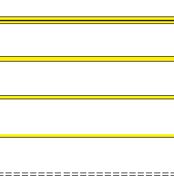
- Autoroute, route à chaussées séparées
- Route de bonne viabilité
- Route de moyenne viabilité
- Route étroite
- Route irrégulièrement entretenue
Importance
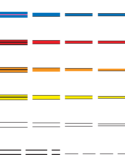
- à éviterAutoroute, bretelle d'autoroute
- à éviterRoute principale
- à éviterRoute régionale
- à éviterRoute locale
- Route irrégulièrement entretenue
- Autoroute et route en construction
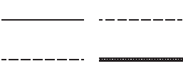
- Chemin, allée - Sentier
- Piste cyclable - Escalier
Infrastructures
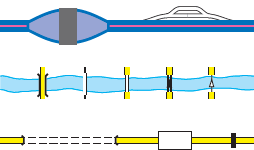
- Péage. Aire de service ou de repos
- Pont. Passerelle. Gué, radier. Bac : autos, piétons
- Tunnel. Dalle de protection. Barrière
Voies férrées - Transports divers
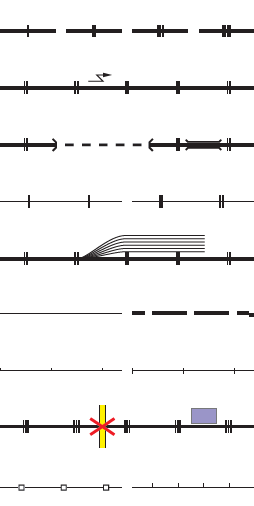
- Voie ferrée : 1 voie, 2 voies, 3 voies, 4 voies
- Voie électrifiée
- Voie ferrée : en tunnel, en pont
- Voie ferrée étroite : 1voie, 2 voies
- Voie de service ou de garage
- Voie ferrée non exploitée - en construction
- Transport urbain - Funiculaire train à crémaillère
- Passage à niveau. Gare
- Télécabine, téléski - Câble transporteur
Hydrographie
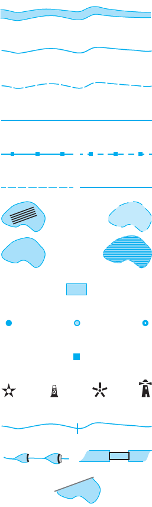
- Fleuve, rivière, ruisseau, torrent permanents > 7,5m
- Fleuve, rivière, ruisseau, torrent permanents < 7,5m
- Fleuve, rivière, ruisseau, torrent temporaires < 7,5m
- Canal < 7,5m
- Aqueduc : au sol, en souterrain
- Laisse : plus hautes mers, plus basses mers
- Pêcherie
- Surface d'eau : permanente, temporaire
- Bassin, réservoir d'eau
- Château d'eau - Réservoir d'eau - ravitaillementPoint d'eau
- Citerne, lavoir, station d'épuration, station de pompage
- Amer - Balise - Feu - Phare
- Cascade
- Barrage : linéaire, surfacique. Écluse
- Quai
Transport d'énergie
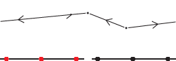
- Ligne électrique - Pylône
- Conduite d'hydrocarbure - Transport de matière première
Transport d'énergie
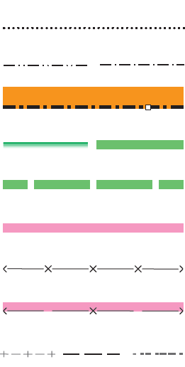
- Limite de commune ou de canton
- Limite d'arrondissement - de département
- Limite d'État. Borne frontière
- Limite de forêt domaniale - Limite de parc naturel
- Limite de zone périphérique de parc naturel
- Limite de zone réglementée ou de réserve naturelle
- Limite d'enceinte militaire
- Limite de champ de tir
- Clôture - Layon - Mur de pierres sèches
Bâtiments et constructions
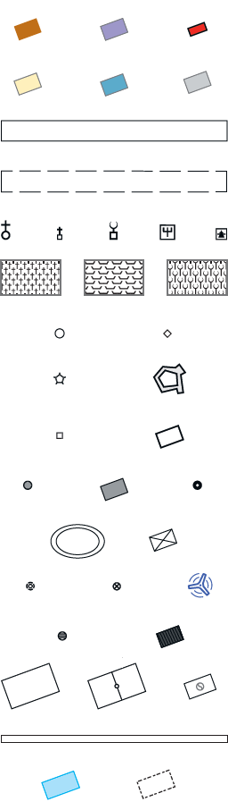
- Bâtiment : quelconque, public. Mairie ou hôtel de ville
- Bâtiment : commercial, industriel, sportif
- Aérodrome avec piste en dur
- Aérodrome avec piste en herbe
- Église - repos ?Chapelle - Mosquée - Synagogue - Autre culte
- Cimetière : chrétien, israélite, musulman
- Clocher - Minaret
- se reposerFort, blockhaus
- Monument : ponctuel, surfacique
- Silos : ponctuel, surfacique. Moulin
- Arène - ravitaillement ?Serre
- Antenne - Construction spéciale technique - Éolienne
- Réservoir : ponctuel, surfacique
- Terrain : ravitaillement ?de sport, de football, de tennis
- Piste de sport
- Bassin piscine - se reposerRuines
Occupation du sol
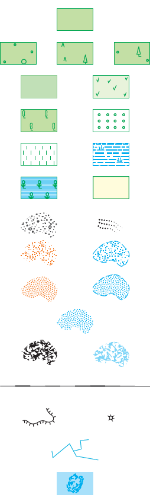
- Bois
- Forêt : de feuillus, de conifères, mixte
- Forêt ouverte - Lande ligneuse
- Peupleraie - manger ?Verger
- Vigne. Végétation aquatique
- Mangrove. Canne à sucre, bananeraie
- Éboulis et moraine. Coulée d'éboulis
- Graviers ou galets : secs, humides
- Sable : sec, humide
- Fond de cuvette humide
- Rochers : en zone sèche, en zone inondable
- Ligne descriptive en zone rocheuse
- Barre rocheuse isolée - Bloc rocheux isolé
- Sérac, crevasse
- Corail
Orographie
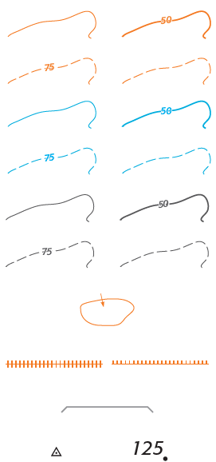
- Courbe de niveau normale, maîtresse
- Courbe intercalaire, sous-intercalaire
- Glacier : normale, maîtresse
- Glacier : intercalaire, sous-intercalaire
- Rocher : normale, maîtresse
- Rocher : intercalaire, sous-intercalaire
- Courbe de cuvette
- Levée de terre - Talus
- Mur de soutènement
- Borne géodésique - Point coté
Indications touristiques
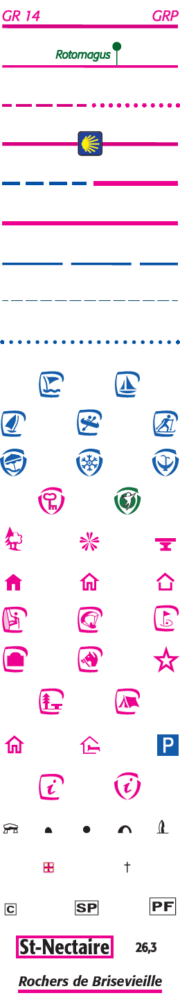
- Sentier de grande randonnée (GR), GR de pays (GRP)
- Sentier de petite randonnée (PR) - Sentier de découverte,
parcours sportif - Poteau de balisage
- Autre sentier - Passage délicat
- Itinéraire de Saint-Jacques-de-Compostelle
- Itinéraire équestre - Train touristique
- Voie verte
- Ski de randonnée
- Liaison maritme
- Ski de randonnée en passage délicat
- Baignade surveillée. manger ?Port de plaisance
- Sports nautiques - Sports en eaux vives - Ski de fond
- Station : balnéaire, de sports d'hiver, thermale
- Ville d'art - Station verte
- Arbre remarquable - s'orienter !Point de vue - s'orienter !Table d'orientation
- Refuge gardé ou gîte équestre - manger ? reposRefuge - Abri
- Site d'escalade - Site de vol libre - Golf
- Pelote basque - Centre équestre - Curiosité
- manger ?Aire de détente - reposCamping
- Auberge de jeunesse - manger ? reposGîte d'étape
- Office de tourisme - Information touristique
- Dolmen - Habitation troglodytique - Gouffre - reposGrotte - Menhir
- Hôpital - s'orienter ?Croix, calvaire - ravitaillement ?Parking
- Chef-lieu de : commune, arrondissement, département
- Station classée - Population (en milliers d'habitants)
- Site remarquable